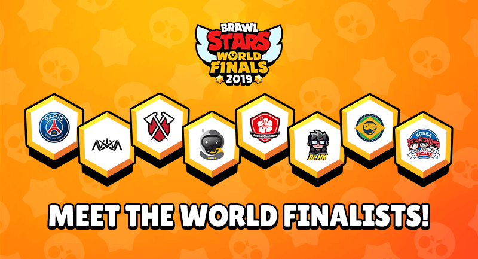
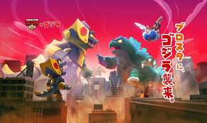
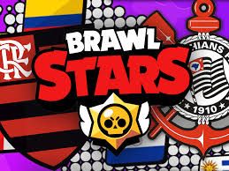
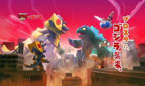
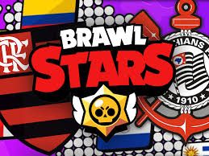

Brawl Stars é um jogo de ação multijogador desenvolvido pela Supercell, a mesma empresa por trás de Clash of Clans e Clash Royale.
Desenvolvimento e Lançamento
Início do Desenvolvimento: Começou em 2014.
Anúncio: Foi anunciado em 14 de junho de 2017.
Beta: Lançado em beta no Canadá em 15 de junho de 2017 para iOS.
Lançamento Global: Lançado mundialmente em 12 de dezembro de 2018 para iOS e Android.
Jogabilidade
Os jogadores controlam "brawlers" com habilidades únicas em diferentes modos de jogo:
Pega-Gemas: Coleta 10 gemas e mantenha-as para vencer.
Combate: Estilo battle royale, o último brawler vivo ganha.
Caça Estelar: Equipes competem para ganhar estrelas eliminando adversários.
Roubo: Ataque a caixa-forte do oponente enquanto defende a sua.
Futebol: Marque gols na meta do adversário.
Eventos Especiais: Oferecem recompensas e variações no jogo.
O jogo é conhecido por sua jogabilidade dinâmica e atualizações regulares.

1. SK Gaming
País: Alemanha
Descrição: SK Gaming é uma das organizações de esports mais antigas e bem-sucedidas da Europa. Eles são conhecidos por ter uma equipe forte em Brawl Stars, frequentemente competindo no topo em torneios internacionais.
2. Tribe Gaming
País: Estados Unidos
Descrição: Tribe Gaming é uma organização de esports norte-americana que tem tido grande sucesso em várias disciplinas de jogos móveis, incluindo Brawl Stars. Seus jogadores são conhecidos por suas habilidades excepcionais e inovação estratégica.
3. Team Queso
País: Espanha
Descrição: Team Queso é uma organização espanhola que se destacou em jogos móveis. Eles têm uma equipe de Brawl Stars altamente competitiva e já ganharam vários torneios importantes.
4. INTZ
País: Brasil
Descrição: INTZ é uma das organizações de esports mais conhecidas do Brasil. Eles têm uma forte presença em Brawl Stars, com jogadores que são considerados entre os melhores da América Latina.
5. PSG Esports
País: França
Descrição: A divisão de esports do Paris Saint-Germain também tem uma equipe de Brawl Stars. Eles são conhecidos por seu desempenho consistente e por serem fortes competidores em torneios globais.
 


